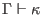

Next: Kind Well-Formedness
Up: The Ur/Web Manual
Previous: Shorthands
Contents
In this section, we give a declarative presentation of Ur's typing rules and related judgments. Inference is the subject of the next section; here, we assume that an oracle has filled in all wildcards with concrete values.
The notations used here are the standard ones of programming language semantics. They are probably the most effective way to convey this information. At the same time, most Ur/Web users can probably get by without knowing the contents of this section! If you're interested in diving into the details of Ur typing but are unfamiliar with ``inference rule notation,'' I recommend the following book:
Benjamin C. Pierce, Types and Programming Languages, MIT Press, 2002.
Since there is significant mutual recursion among the judgments, we introduce them all before beginning to give rules. We use the same variety of contexts throughout this section, implicitly introducing new sorts of context entries as needed.
-

expresses kind well-formedness.
-
assigns a kind to a constructor in a context.
-
proves the disjointness of two record constructors; that is, that they share no field names. We overload the judgment to apply to pairs of field names as well.
-
proves that record constructor
 decomposes into set
decomposes into set  of field names and record constructors.
of field names and record constructors.
-
proves the computational equivalence of two constructors. This is often called a definitional equality in the world of type theory.
-
is a standard typing judgment.
-
combines typing of patterns with calculation of which new variables they bind.
-
expresses how a declaration modifies a context. We overload this judgment to apply to sequences of declarations, as well as to signature items and sequences of signature items.
-
is the signature equivalence judgment.
-
is the signature compatibility judgment. We write
as shorthand for
.
-
is the module signature checking judgment.
-
is a partial function for projecting a signature item from
 , given the module
, given the module  that we project from.
may be
,
,
,
, or
. The parameter
is needed because the projected signature item may refer to other items from
.
that we project from.
may be
,
,
,
, or
. The parameter
is needed because the projected signature item may refer to other items from
.
-
adds information to signature items
to reflect the fact that we are concerned with the particular module
. This function is overloaded to work over individual signature items as well.
Subsections
Next: Kind Well-Formedness
Up: The Ur/Web Manual
Previous: Shorthands
Contents
2014-07-14